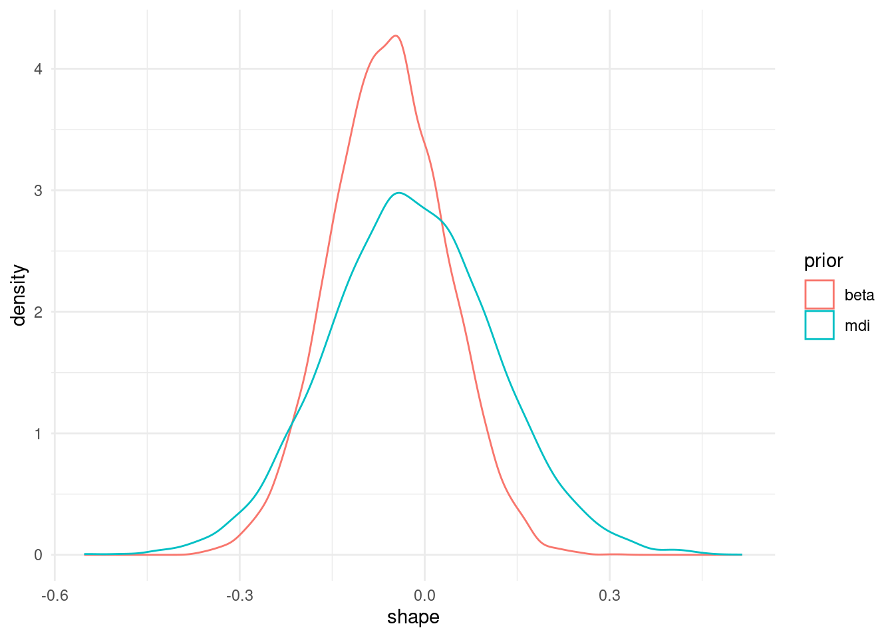
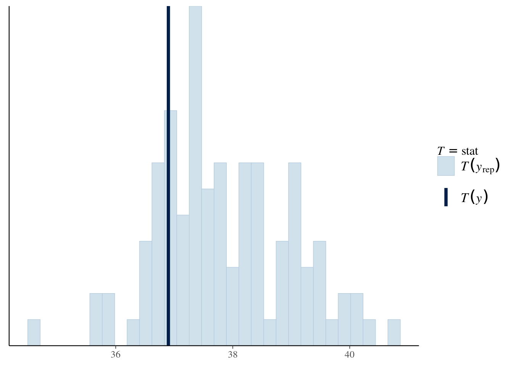

library(revdbayes)
library(ggplot2)
data("frwind", package = "mev")
lyon <- with(frwind,
xts::xts(x = S2, order.by = date))
# Create series of yearly maximum
ymax <- as.numeric(xts::apply.yearly(lyon, max))
# Fit a model with a trivariate normal prior for mu, log(sigma), xi
prior1 <- set_prior(prior = "mdi", model = "gev")
prior2 <- set_prior(prior = "beta", model = "gev")
prior3 <- set_prior(prior = "norm",
model = "gev",
mean = c(mean(ymax), log(sd(ymax)), 0),
cov = diag(c(1000, 1000, 1)))Bayesian modelling
In the frequentist paradigm, we consider inference for a fixed value of the parameter that generated the data, treated as random. In Bayesian inference, we consider inference conditional on the observed data, and treat the parameter as random. This can be understood as reflecting our uncertainty about the value that generated the data from the model. To achieve this, the likelihood of the random sample \(\boldsymbol{Y}\) is combined with prior distributions for the model parameters \(\boldsymbol{\theta} = (\theta_1,\ldots,\theta_m)^\top \in \boldsymbol{\Theta}\), with prior density \(p(\boldsymbol{\theta})\); we use the generic notation \(p(\ldots)\) for various conditional and unconditional densities and mass functions.
The posterior distribution, \[ p(\boldsymbol{\theta} \mid \boldsymbol{Y}) = \frac{p(\boldsymbol{Y} \mid \boldsymbol{\theta})p(\boldsymbol{\theta})}{ \int p(\boldsymbol{Y} \mid \boldsymbol{\theta})p(\boldsymbol{\theta})\mathrm{d}\boldsymbol{\theta}}, \tag{1}\] is proportional, as a function of \(\boldsymbol{\theta}\), to the product of the likelihood and the priors in the numerator, but the integral appearing in the denominator of Equation 1 is untractable in general. In such cases, the posterior density \(p(\boldsymbol{\theta} \mid \boldsymbol{Y})\) usually does not correspond to any well-known distribution family, and posterior inferences about the components of \(\boldsymbol{\theta}\) further involve marginalizing out the other components.
For instance, to obtain the posterior density \(p(\theta_1\mid \boldsymbol{Y})\) of the first parameter in \(\boldsymbol{\theta}\), we have to evaluate the \((m-1)\)-dimensional integral \(\int p(\boldsymbol{\theta} \mid \boldsymbol{Y})\,\mathrm{d}(\theta_2,\ldots,\theta_m)\). If we have posterior draws from \(\boldsymbol{\theta}\), this amounts to picking out only entries that correspond to the particular parameter of interest, e.g., \(\theta_1\).
Most of the field of Bayesian statistics revolves around the creation of algorithms that circumvent the calculation of the normalizing constant (or else provide accurate numerical approximation of the latter) or that allow for marginalizing out all parameters except for one.
Prior specification for extremes
We first consider priors for the model parameters of extreme value distributions. These should reflect the range of plausible values and can sometimes interpreted be interpreted as penalties: for example, normal parameters in mixed models shrink values towards the overall mean or slope vectors. The more concentrated the prior mode is, the more influence the prior has. Bernstein-von Mises theorem however guarantees that, as the sample size grows, the influence of the prior is washed away unless the prior imposes restrictions on the support \(\Theta\). For example, if we take a Beta prior \(\xi \sim \mathsf{Be}(a,b)\) prior on \([-0.5, 0.5]\), then the posterior for \(\xi\) will be restricted to this range and shrunk towards the prior mean.
Suppose we fit a generalized extreme value distribution as before. The revdbayes package specifies a range of prior functions, see ?revdbayes::set_prior. It is possible to set priors for, e.g., the quantile spacing, and then map them back to the GEV parameters \(\mu, \sigma, \xi\).
Having specified our prior distributions, we can use software to obtain draws from the posterior. Here, we use revdbayes (Northrop, 2023) to get exact samples using the ratio-of-uniform algorithm (Wakefield et al., 1991). To see what impact priors have, we plot the marginal posterior, obtaining simply by dropping the columns for the other model parameters.
post_1 <- revdbayes::rpost_rcpp(
n = 1e4L,
model = "gev",
data = ymax,
prior = prior1,
nrep = 100)
post_samp1 <- post_1$sim_vals
post_samp2 <- revdbayes::rpost_rcpp(
n = 1e4L,
model = "gev",
data = ymax,
prior = prior2)$sim_vals
# Compute marginal posterior for shape
ggplot(data = data.frame(
shape = c(post_samp1[,'xi'],
post_samp2[,'xi']),
prior = rep(c("mdi", "beta"),
each = nrow(post_samp1))),
mapping = aes(x = shape,
col = prior,
group = prior)) +
geom_density() +
theme_minimal()
We are not restricted to the default parametrization: appealing to invariance of the log likelihood, and thanks to max-stability we can directly compute the marginal posterior of the expectation of the 50 year maximum.
gev_Nmean <- function(par, N){
# Map parameters via GEV max-stability
mu <- par[1] + par[2]*(N^par[3]-1)/par[3]
sigma <- par[2]*N^par[3];
xi <- par[3]
# then use formula for GEV expectation
ifelse(xi > 1,
Inf,
mu - sigma/xi * (1 - N^xi * gamma(1 - xi)))
}
# For each combination of posterior draw
# compute functional of interest
# This years the posterior distribution of 50 year mean
post_gev_mean <- apply(post_samp1, 1, gev_Nmean, N = 50)
# Posterior quartiles
quantile(post_gev_mean, c(0.25, 0.5, 0.75)) 25% 50% 75%
59.31238 67.05540 81.09692 # To get a 95% credible interval, simply compute quantiles
quantile(post_gev_mean, c(0.025, 0.975)) 2.5% 97.5%
51.93082 153.86240 We can see that the credible intervals are quite asymmetric.
More generally, we may be interested in prediction, which in the Bayesian paradigm arises from the posterior predictive distribution. For each posterior draw \(\boldsymbol{\theta}_b\), we simulate new observations from the generative model, here GEV.
post_pred_samp <- revdbayes::rgev(
n = nrow(post_samp1),
loc = post_samp1[,'mu'],
scale = post_samp1[,'sigma'],
shape = post_samp1[,'xi'],
m = 50L) # 50 year parameters
summary(post_pred_samp) Min. 1st Qu. Median Mean 3rd Qu. Max.
42.06 49.54 52.63 55.22 57.56 259.41 As part of the Bayesian workflow (Gabry et al., 2019), we can also check if our model is in line with expectations by computing a summary statistic on simulate datasets from the posterior predictive, and comparing it with that of the original data. If the value for the original sample lies far into the tails of the distribution of simulated samples, this provides evidence of model misspecification.
pp_check(post_1, stat = median)`stat_bin()` using `bins = 30`. Pick better value with `binwidth`.
Loss function
In the EVA 2023 data challenge, a custom loss function for the return levels \(q\) was provided, of the form \[\begin{align*} L(q, \widehat{q}(\theta)) = \begin{cases} 0.9(0.99q - \widehat{q}), & 0.99q > \widehat{q} \\ 0, & |q - \widehat{q}| \leq 0.01 q\\ 0.1(\widehat{q} - 1.01q), & 1.01q < \widehat{q}. \end{cases} \end{align*}\] In the Bayesian paradigm, we compute the average loss over the posterior distribution of the parameters, for given value of the return level \(q_0\): \[\begin{align*} r(q_0) = \int_{\boldsymbol{\Theta}}L(q(\boldsymbol{\theta}), q_0) p (\boldsymbol{\theta}) \mathrm{d} \boldsymbol{\theta} \end{align*}\] and then we seek to minimize the risk \(\mathrm{min}_{q_0 \in \mathbb{R}_{+}} r(q_0)\)
gev_retlev <- function(par, N, p = 0.368){
# Map parameters via GEV max-stability
mu <- par[1] + par[2]*(N^par[3]-1)/par[3]
sigma <- par[2]*N^par[3];
xi <- par[3]
# quantile of N-block maximum
mev::qgev(p = p, loc = mu, scale = sigma, shape = xi)
}
# Loss function
loss <- function(qhat, q){
mean(ifelse(0.99*q > qhat,
0.99*(0.99*q-qhat),
ifelse(1.01*q < qhat,
0.1*(qhat-1.01*q),
0)))
}
# Compute the posterior of the return levels
retlev_post <- apply(post_samp1, 1, gev_retlev, N = 50)
# Create a grid of values over which to estimate the risk
retlev_psi <- seq(
from = quantile(retlev_post, 0.2),
to = quantile(retlev_post, 0.99),
length.out = 101)
# Create a container to store results
risk <- numeric(length = length(retlev_psi))
for(i in seq_along(risk)){
# Compute integral (Monte Carlo average over draws)
risk[i] <- loss(q = retlev_post, qhat = retlev_psi[i])
}
# Plot loss function
ggplot(data = data.frame(
loss = risk,
retlev = retlev_psi),
mapping = aes(x = retlev, y = loss)) +
geom_line() +
geom_vline(xintercept = mean(retlev_post)) +
labs(x = "return level") +
theme_minimal()
The minimum of the loss function is returned for return levels values that are much higher than the posterior mean.
References
Gabry, J., Simpson, D., Vehtari, A., Betancourt, M., & Gelman, A. (2019). Visualization in Bayesian Workflow. Journal of the Royal Statistical Society Series A: Statistics in Society, 182(2), 389–402. https://doi.org/10.1111/rssa.12378
Northrop, P. J. (2023).
revdbayes: Ratio-of-uniforms sampling for Bayesian extreme value analysis.
Wakefield, J. C., Gelfand, A. E., & Smith, A. F. M. (1991). Efficient generation of random variates via the ratio-of-uniforms method. Statistics and Computing, 1(2), 129–133. https://doi.org/10.1007/BF01889987